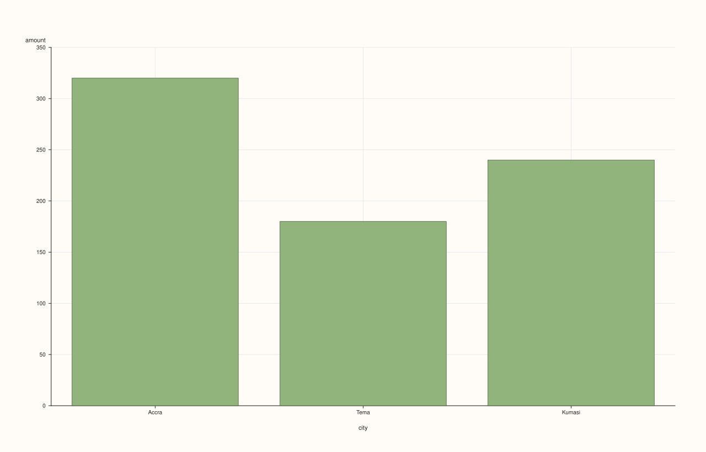
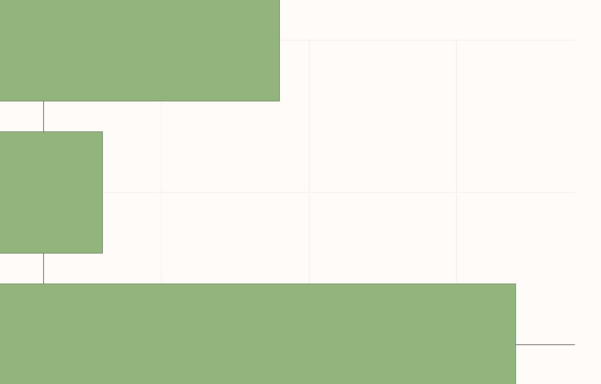

StreamPlotAccessor::bar¶
Back to StreamPlotAccessor API Reference
Signatures¶
StreamPlotAccessor::bar() const -> pluss::pl::Studio
StreamPlotAccessor::bar(const Stream& x) const -> pluss::pl::Studio
StreamPlotAccessor::bar(const BarPlotOptions& options) const -> pluss::pl::Studio
StreamPlotAccessor::bar(const Stream& x, const BarPlotOptions& options) const -> pluss::pl::Studio
What It Does¶
Draws one bar per row for the bound stream’s values, against an optional companion x
stream — the same shape and naming rules as line(), drawn as bars instead of a
connected line. Every overload forwards to
SlatePlotAccessor::bar after Stream::to_slate().
Parameters¶
x (const Stream&, optional)
Same as line()’s x — a mismatched size throws
"Slate::plot: slate size mismatch".
options (BarPlotOptions)
The identical struct documented on
CatalogPlotAccessor::bar (ci_enabled, ci_level,
horizontal, align). ci_enabled = true aggregates rows sharing the same x
position into a mean-plus-confidence-interval bar — useful when x has repeated
values, which a plain case index (no x given) never does.
Returns¶
pluss::pl::Studio
A figure with one pane containing a single bar trace of the bound stream’s values.
Examples¶
Example 1. No companion stream: falls back to a plain case index.
using namespace pluss::kindle;
auto amount = Stream(pluss::make_series({320.0, 180.0, 240.0}));
auto chart = amount.plot().bar();
chart.show();
Example 2. An explicit companion stream as the category axis.
using namespace pluss::kindle;
auto amount = Stream(pluss::make_series({320.0, 180.0, 240.0}));
auto city = Stream(pluss::make_note({"Accra", "Tema", "Kumasi"}));
auto chart = amount.plot().bar(city);
chart.show();

Example 3. An explicit BarPlotOptions, drawing horizontal bars, with no companion stream.
using namespace pluss::kindle;
auto amount = Stream(pluss::make_series({320.0, 180.0, 240.0}));
pluss::table::BarPlotOptions options;
options.horizontal = true;
auto chart = amount.plot().bar(options);
chart.show();
Example 4. A companion stream together with explicit options.
using namespace pluss::kindle;
auto amount = Stream(pluss::make_series({320.0, 180.0, 240.0}));
auto city = Stream(pluss::make_note({"Accra", "Tema", "Kumasi"}));
pluss::table::BarPlotOptions options;
options.horizontal = true;
auto chart = amount.plot().bar(city, options);
chart.show();

Example 5. A mismatched-size companion stream throws.
using namespace pluss::kindle;
auto amount = Stream(pluss::make_series({320.0, 180.0, 240.0}));
auto short_city = Stream(pluss::make_note({"Accra", "Tema"}));
try {
auto bad = amount.plot().bar(short_city);
} catch (const std::exception& e) {
std::cout << e.what();
}
Output¶
Slate::plot: slate size mismatch
Notes¶
See Also¶
SlatePlotAccessor::bar: the method this delegates to.StreamPlotAccessor::line: the canonical explanation of this accessor’s shared naming/row-label mechanics.StreamPlotAccessor::hist: bars over binned value ranges instead of one bar per record.